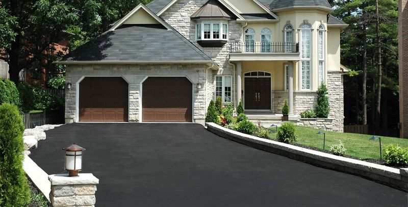

Entrées résidentielles
Pavage neuf, réfection complète et élargissement d’entrées. Nous vérifions la pente, corrigeons le drainage et compactons la fondation avant de paver.
Planifier mon projet d’entréePavage d’asphalte / Okanagan et Shuswap
Entrées, stationnements et routes sur une base solide. Du nivellement au compactage final, notre équipe locale s’occupe de tout.

Services
Qu’il s’agisse d’une entrée ou d’un stationnement en service, nous adaptons les travaux au terrain, à la circulation et au drainage.
Pavage neuf, réfection complète et élargissement d’entrées. Nous vérifions la pente, corrigeons le drainage et compactons la fondation avant de paver.
Planifier mon projet d’entrée
Pavage de stationnements et de voies d’accès, resurfaçage et réparations. Nous pouvons travailler par étapes pour maintenir l’accès dans la mesure du possible.
Voir le pavage commercial (en anglais)Réparation de routes, pavage de chemins agricoles, de cours et de sites industriels.
Réalisation / Salmon Arm, C.-B.
L’entrée s’affaissait et l’eau ne s’évacuait pas. Nous avons reconstruit la fondation, corrigé la pente et élargi l’entrée pour deux véhicules avant de poser l’enrobé à chaud.
Voir la galerie (en anglais)

Notre méthode
Nous vérifions la pente, le drainage et la fondation existante, puis présentons les options dans une soumission écrite.
Au besoin, nous retirons les matériaux instables, nivelons le terrain pour évacuer l’eau et compactons les nouveaux granulats.
Nous posons un enrobé à chaud d’une épaisseur adaptée à la circulation, le compactons et inspectons le résultat avec vous.
Secteur desservi
Nous couvrons l’Okanagan et le Shuswap. Pour les projets d’envergure, renseignez-vous sur nos déplacements ailleurs en Colombie-Britannique.
Le prix dépend de la superficie, de l’accès au chantier et des travaux de fondation ou de drainage nécessaires. Nous vous remettons une soumission détaillée après une visite gratuite.
Dans certains cas. Nous évaluons l’état de l’asphalte et la stabilité de la fondation avant de proposer un resurfaçage ou une réfection.
Oui. Nous vérifions l’écoulement de l’eau et pouvons corriger la pente ou installer des drains avant de paver.
Oui. Nous offrons une garantie écrite d’un an.
Évaluation gratuite sur place
Indiquez votre emplacement et la surface à paver. Nous viendrons examiner le terrain et vous présenterons vos options par écrit.